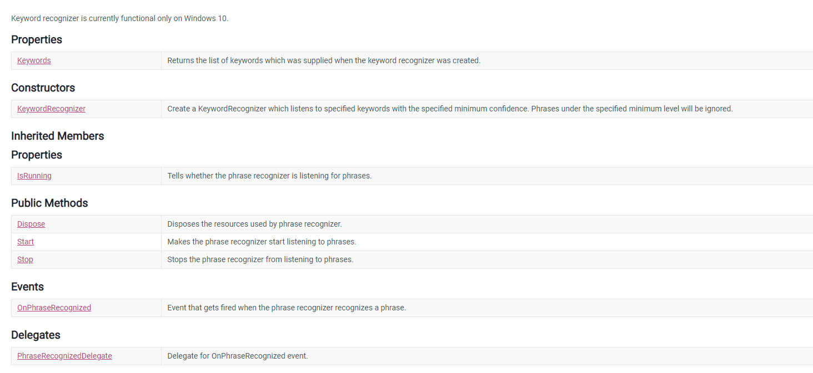

Extend from one player mode
To understand this mode. It is necessary to go back to the core of the game, which is the voice control part.
Unity only lets the developer to take input from the microphone, but there is no method in Unity that allows the developer to recognize exactly what is the word being said. In short, it requires another class built in unity, which is Keywordrecognizer, this is class can be used to recognize the exact word that the player said. But there are many technologies restraint to this class, which will be mentioned later in the project’s restriction. One of this is that there is no method that can differentiate the voice source from multiple voice input.
In short, you cannot figure where the sound coming from mic1 or mic2. Moreover, there cannot be 2 keywordrecorgnizer that listened to the same key word, meaning that there will be error if you have two different keywordrecognizer that listen to the same keyword.
The simple solution for this is to decide where is the source of the sound coming from (mic1 or mic2), this brings us back to the first restriction. In conclusion, we have decided to make 2 keywordrecorgnizer which listened for 2 separate set of keywords, knowing that this will also affect the recognition speed of the game.
How does it work?
For this part, we developed with the same ideas with the offline mode. But instead of having 1 player and 1 bot. We imported 2 player objects with differentiate movement controller. Both of this script are like each other except that in the keyword recognizer, it listened to different keyword set.